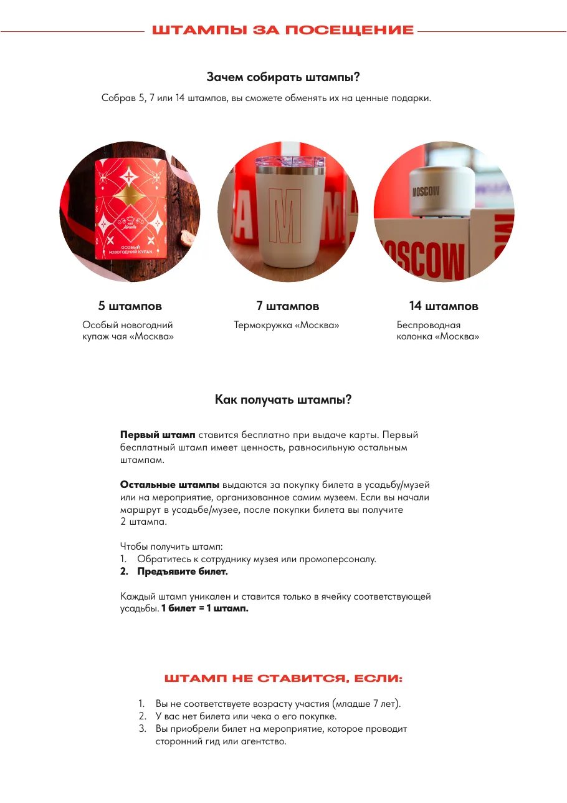

Проектный офис × Яндекс Go, 12.2025–02.2026
Зимний маршрут «Москва усадебная» с Яндекс Go: от выбора усадеб до подарков
Зимний маршрут фестиваля «Усадьбы Москвы» вместе с Яндекс Go: берёшь карту, ходишь по 14 усадьбам, собираешь штампы за билеты и меняешь их на подарки. Я выбирал усадьбы, придумал концепцию нарисованной карты, собирал факты для иллюстраций, писал правила и памятку и отвечал за подарки.
14усадеб в маршруте
5 / 7 / 14штампов — три уровня подарков
3 месяцадлился маршрут: декабрь — февраль
Результат
Запустили маршрут на 3 месяца, с декабря по февраль: 14 усадеб, нарисованная карта, штампы и подарки, вместе с Яндекс Go. Я добавил все 14 усадеб и площадку в Коломенском в AR-игру RUSSPASS, так у маршрута появилась вторая точка входа в приложении.
Как измеряли
Метрики маршрута остались у команды фестиваля.
Что сделал я
- Выбирал усадьбы для маршрута.
- Интегрировал 14 усадеб и площадку в Коломенском в AR-игру RUSSPASS: игрок ищет на карте мультяшных персонажей и получает бонусы.
- Придумал концепцию нарисованной карты.
- Собрал интересные факты о каждой усадьбе, по ним Яндекс сделал иллюстрации.
- Отвечал за подарки и их доставку.
- Написал правила маршрута и памятку участника: механика, где взять карту, как получить штамп, где забрать подарок, ответы на частые вопросы.
- Разложил механику на три шага и вынес исключения отдельно: когда штамп не ставится, где выдают только подарок за 5 штампов.
Механика игры
1. Получите карту в любой локации маршрута. Первый штамп ставится бесплатно при выдаче карты.
2. Посещайте усадьбы в любом порядке и собирайте 5, 7 или 14 штампов. Штампы проставляются за покупку билетов в усадьбы.
3. Получите подарок в обмен на карту на флагманской площадке фестиваля в «Коломенском» или в туристических центрах.
Прокрутите внутри
Экраны



Хотите обсудить роль?
Написать в Telegram